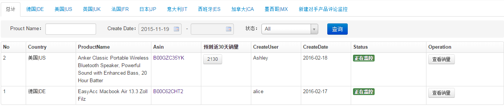

对手销量监控
添加对手产品销量监控
- 只能录入对手产品Asin,保存记录就开始监控对手产品销量
对手产品销量监控列表

- 查看添加的所有对手产品销量情况
- Operation列，点击查看销量按钮，查看从监控日期开始对手产品每天库存及相邻两天差值信息；点击取消按钮，取消对手产品销量监控
- 预测近30天销量： 放入购物车数量是999，然后根据亚马逊提示，会告诉一个库存，如果库存大于999，就会显示999，这样的数据不要，要小于999的，然后根据连续几天的差值，算出30天的销量。
连续两天有库存,并且后一天比前一天大,然后取差额平均,最后乘上30。